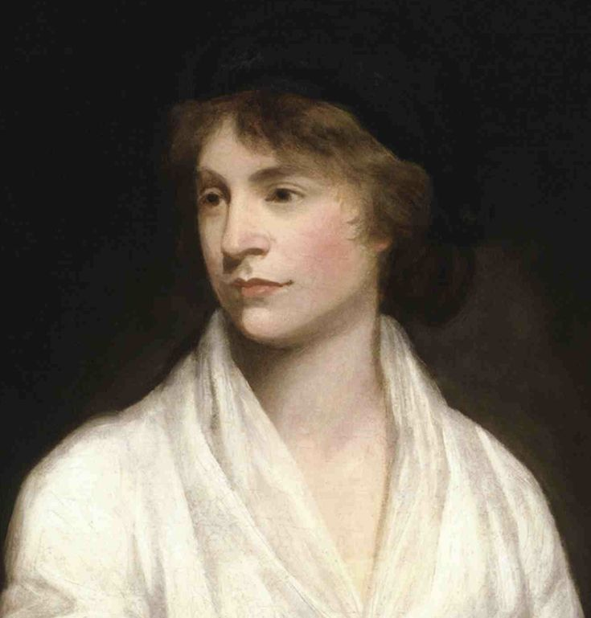
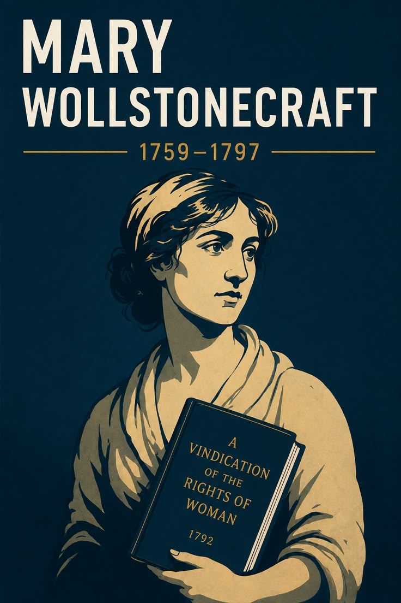

Who Was Mary Wollstonecraft?
Mary Wollstonecraft was an English philosopher, writer, and educator who lived from 1759 to 1797. She is remembered above all as the author of A Vindication of the Rights of Woman, one of the founding texts of feminist philosophy, in which she argued with unusual force and rigor that women possess exactly the same fundamental capacity for reason and virtue as men, and that their apparent inferiority results from a systematically deficient education rather than any natural incapacity of mind.
Wollstonecraft is especially associated with applying the core principles of Enlightenment philosophy, particularly its confidence in reason as the proper foundation of human dignity and moral worth, consistently and rigorously to the situation of women, a group many of her celebrated Enlightenment contemporaries had, in her view, conveniently excluded from the very principles of rational equality they otherwise championed for men.
Working as a governess, schoolteacher, and professional writer within the radical intellectual circles of late eighteenth- century London, Wollstonecraft produced an unusually varied body of philosophical, educational, and fictional writing over a relatively short career, engaging directly with major political events of her era, including the French Revolution, while also living a personally turbulent life that she candidly reflected within much of her own creative and philosophical work.
Because Wollstonecraft's philosophical reputation suffered considerably following the posthumous publication of biographical details about her personal life, her work was for many decades undervalued within the philosophical canon before undergoing a significant scholarly revival. Her importance nonetheless remains foundational, since her systematic argument for women's rational equality continues to be recognized as a genuinely original and historically decisive contribution to political philosophy.
Mary Wollstonecraft: Quick Facts
- Name — Mary Wollstonecraft
- Period — 1759–1797
- Born in — Spitalfields, London, England
- Died in — London, England
- Associated with — Enlightenment philosophy and early feminist thought
- Known for — A Vindication of the Rights of Woman
- Major works — A Vindication of the Rights of Woman, A Vindication of the Rights of Men, Mary: A Fiction
- Notable critique — Jean-Jacques Rousseau's views on women's education
- Spouse — William Godwin, philosopher and novelist
- Daughter — Mary Shelley, author of Frankenstein
Wollstonecraft and the Age of Revolution

Wollstonecraft's intellectual career unfolded during one of the most politically unsettled periods of eighteenth-century European history. The French Revolution, beginning in 1789, transformed debates about political authority, inherited privilege, natural rights, citizenship, and the legitimacy of established institutions. Enlightenment arguments that had previously circulated primarily among intellectuals increasingly became questions of public political struggle, forcing philosophers and writers to consider what principles should govern societies undergoing revolutionary change.
Wollstonecraft was deeply engaged with these debates rather than treating the condition of women as an isolated social question. She believed that arguments about natural rights and human rationality raised a broader philosophical problem: if human beings possess rights because they are rational and morally capable, then those principles cannot consistently be restricted according to inherited social categories. Her feminist philosophy therefore emerged partly from a wider examination of the meaning and limits of Enlightenment universalism.
Her intellectual environment in London was especially important. Wollstonecraft became closely associated with the publisher Joseph Johnson, whose literary circle brought together writers, dissenters, scientists, theologians, political reformers, and radical intellectuals. Through this network she encountered some of the most important political and philosophical controversies of the period. Johnson published Wollstonecraft's writings and provided her with access to a community in which women could participate more seriously in intellectual and literary life than conventional social expectations normally permitted.
One of the most important controversies surrounding the Revolution concerned the response of Edmund Burke. His Reflections on the Revolution in France defended inherited institutions and warned against reconstructing society according to abstract theories of reason. Wollstonecraft responded in A Vindication of the Rights of Men in 1790, defending principles of rational criticism, natural rights, and opposition to hereditary privilege. This political argument provided an important bridge between her earlier intellectual development and her later feminist philosophy.
The revolutionary period also created an opportunity to expose the limits of supposedly universal political principles. Public arguments about liberty and equality frequently continued to assume that the political subject was male, while women remained excluded from meaningful citizenship and formal education. Wollstonecraft's importance lies partly in recognizing this contradiction and asking whether Enlightenment ideals could remain philosophically credible if half of humanity was denied the educational conditions necessary to develop its rational capacities. Her answer helped make women's education and rational equality central questions within modern feminist philosophy.
Wollstonecraft's Early Life and Struggles
Mary Wollstonecraft was born in Spitalfields, London, in 1759, the second of seven children in a family whose financial circumstances deteriorated during her childhood. Her father, Edward John Wollstonecraft, experienced repeated financial difficulties and was frequently violent toward her mother, Elizabeth Dixon Wollstonecraft. Growing up within an unstable household gave Wollstonecraft an early and deeply personal awareness of how economic dependence and unequal power could shape family relationships, experiences that later informed her criticism of women's legal and domestic vulnerability.
Wollstonecraft did not receive the kind of sustained formal education available to many boys of her social position. Instead, she developed much of her intellectual ability through self-education, reading, observation, conversation, and friendships with intellectually ambitious people. Her experience was significant because it exposed the gap between the capacity for learning and the educational opportunities actually made available to women. The distinction between natural ability and socially produced limitations would become one of the central premises of her later argument for female education.
A particularly important relationship in her early adulthood was her friendship with Fanny Blood, whom Wollstonecraft regarded as an intellectually and emotionally important companion. Together with her sisters, Wollstonecraft eventually attempted to establish a school at Newington Green, a community associated with religious dissenters and reform-minded intellectuals. Although the school was financially unsuccessful and short-lived, the experience gave Wollstonecraft practical insight into educational work and strengthened her conviction that women required opportunities to become economically and intellectually self-supporting.
Wollstonecraft's early working life included employment as a lady's companion and later as a governess in Ireland. These occupations were among the relatively limited forms of respectable employment open to educated women without independent wealth. Her experience as a governess was particularly revealing because she observed how girls could receive instruction designed primarily to make them socially accomplished rather than intellectually independent. Such experiences helped shape the educational criticism that would later become central to A Vindication of the Rights of Woman.
The difficulties of Wollstonecraft's youth should not be treated merely as biographical background, because they became connected to her philosophical analysis of dependence, education, and autonomy. She experienced firsthand how poverty could restrict choices and how family structures could make women vulnerable when they lacked independent income or recognized authority. Her later insistence that women should develop reason, acquire useful knowledge, and possess greater economic independence therefore emerged from both Enlightenment argument and lived observation. Her philosophy repeatedly connects personal independence with the ability to exercise genuine moral judgment.
Wollstonecraft's Career: Governess, Teacher, Writer
Before becoming an established author, Wollstonecraft worked in several occupations that were among the few respectable forms of employment available to women without substantial financial independence. She worked as a lady's companion, attempted to establish a school with her sisters and Fanny Blood, and later became a governess for the Kingsborough family in Ireland. These experiences were more than temporary employment: they exposed her to the economic limitations imposed on women and to the weaknesses of contemporary approaches to female education.
Her transition toward professional authorship began when she moved increasingly into London's literary world. The publisher Joseph Johnson became a crucial professional supporter, publishing her work and employing her as a reviewer and translator for the Analytical Review. Through Johnson's circle, Wollstonecraft encountered writers and intellectuals involved in debates over religion, politics, education, science, morality, and social reform. This environment helped transform her from a woman struggling to find respectable employment into a recognized professional intellectual.
Wollstonecraft's career was unusually varied for a woman writer of the eighteenth century. Her publications included educational works such as Thoughts on the Education of Daughters, political arguments such as A Vindication of the Rights of Men and A Vindication of the Rights of Woman, travel writing, novels, translations, reviews, and letters. This range demonstrates that her intellectual interests extended beyond the question of women's rights alone. Education, morality, political authority, social institutions, human development, and emotional life were interconnected concerns throughout her work.
The publication of A Vindication of the Rights of Woman in 1792 established Wollstonecraft as one of the most important political and educational thinkers of her generation. The book was written in the aftermath of her response to the French Revolution and engaged directly with contemporary debates over the nature of women and their proper education. Rather than merely requesting improved manners or gentler treatment for women, Wollstonecraft challenged the underlying assumption that women should be educated primarily for pleasing men.
Her professional trajectory is philosophically significant because it illustrated the connection between intellectual autonomy and material independence. Wollstonecraft repeatedly confronted the economic realities that made women dependent upon fathers, husbands, employers, or patrons. Writing became one of the principal means through which she developed an independent intellectual identity. Her career therefore embodied, imperfectly but powerfully, the principle she defended in her philosophy: that women should have opportunities to cultivate their abilities and participate as reasoning agents in public intellectual life.
What Did Wollstonecraft Believe?
At the center of Wollstonecraft's philosophy is the conviction that reason is essential to human dignity and moral development. She shared this emphasis with important strands of Enlightenment thought, but applied it with unusual consistency to the social position of women. If women are human beings capable of reflection, judgment, and moral agency, then they must be educated in ways that allow those capacities to develop. Her feminist argument therefore begins with a philosophical account of human nature rather than with a demand for isolated legal privileges.
Wollstonecraft rejected the assumption that women were naturally intellectually inferior to men. She argued that the apparent weakness attributed to women was often produced by their social circumstances, especially an education that emphasized beauty, obedience, accomplishments, emotional sensitivity, and dependence. A society that systematically prevents people from developing their reasoning capacities cannot fairly use the resulting limitations as proof of their natural incapacity. This argument anticipates later philosophical distinctions between biological claims about human nature and the social formation of abilities.
Education therefore occupies a central position in Wollstonecraft's political philosophy. She did not regard education simply as the transmission of information or preparation for employment. Proper education should cultivate judgment, self-command, moral independence, physical health, and the capacity to participate responsibly in social life. For women in particular, this meant replacing an education oriented toward attracting and pleasing men with one directed toward becoming rational and morally responsible human beings.
Wollstonecraft also connected individual development to the quality of society. Educated women would not simply become more independent individuals; they could also become more capable parents, friends, spouses, teachers, and citizens. Her argument consequently combines individual autonomy with a broader theory of social improvement. She believed that a society structured around rational education and genuine virtue would be healthier than one that trained women and men according to rigid hierarchies and artificial social expectations.
Wollstonecraft's precise political position remains a subject of scholarly interpretation. She clearly argued for women's rational equality and major educational reforms, but her writings do not simply reproduce the modern language of unrestricted political equality, universal suffrage, or contemporary feminist theory. Her importance lies instead in the philosophical pressure her arguments placed on Enlightenment concepts of reason, virtue, rights, and equality. She forced readers to confront whether principles presented as universal could coherently exclude women from the conditions required for rational and moral development.
A Vindication of the Rights of Woman: Her Masterwork

A Vindication of the Rights of Woman, published in 1792, is Wollstonecraft's most influential philosophical work and one of the foundational texts in the history of feminist philosophy. The book develops a sustained argument that women should not be educated merely to become attractive, obedient, and socially accomplished companions for men. Instead, they should receive an education capable of developing their reason, judgment, independence, and moral character. Its central concern is therefore the relationship between human rationality, education, virtue, and social equality.
Wollstonecraft's argument begins from a challenge to conventional assumptions about female nature. If women appear frivolous, emotionally dependent, or intellectually limited, she asks readers to consider whether these characteristics are actually produced by the conditions under which women are raised. Girls are frequently trained to value appearance and male approval, then later criticized for lacking intellectual seriousness. Wollstonecraft regarded this as a profound social contradiction: society manufactures dependency and subsequently mistakes the resulting behavior for evidence of natural female weakness.
A major target of the book is Jean-Jacques Rousseau, particularly his account of female education in Émile. Rousseau's ideal woman, Sophie, is educated largely in relation to the needs and expectations of men. Wollstonecraft objected that such an education prevents women from becoming fully rational and independent moral agents. Her disagreement with Rousseau was therefore not merely about educational techniques; it concerned the philosophical status of women and the consistency of Enlightenment theories of natural freedom and human development.
Wollstonecraft also connects women's education to the institution of marriage. A woman trained primarily to attract a husband may enter marriage without the intellectual resources necessary for genuine friendship or equality. Such dependence can encourage manipulation, jealousy, vanity, and resentment rather than stable companionship. Wollstonecraft's alternative is a relationship between people capable of respecting one another as rational beings. Education thus becomes both a feminist demand and a means of reforming intimate and family relationships.
The enduring importance of A Vindication of the Rights of Woman lies in the way it connects women's status to general philosophical principles. Wollstonecraft did not merely claim that women deserved kindness; she argued that denying women the means to develop their rational capacities was inconsistent with a serious commitment to virtue and human improvement. Later feminist thinkers would develop different approaches to equality, citizenship, sexuality, labor, and political rights, but Wollstonecraft's insistence that women's intellectual development is a matter of justice remains central to modern discussions of feminist philosophy.
A Vindication of the Rights of Men: Response to Burke
A Vindication of the Rights of Men, published in 1790, was Wollstonecraft's first major political work and a direct response to Edmund Burke's Reflections on the Revolution in France. Burke had criticized the French Revolution and defended the historical continuity of established political and social institutions. Wollstonecraft responded by challenging the moral and political legitimacy of inherited privilege, hereditary rank, and social arrangements justified primarily by tradition.
Wollstonecraft's disagreement with Burke concerned more than the immediate political events in France. At stake was a fundamental question about the source of political legitimacy. Burke emphasized historical inheritance, established institutions, and the accumulated wisdom of generations, whereas Wollstonecraft placed greater confidence in reason and principles of justice. She argued that institutions should not receive moral authority simply because they are old, and that inherited status cannot by itself establish a person's superior worth.
Her defense of rational equality also reflected her broader concern with the relationship between social hierarchy and moral character. Wollstonecraft criticized aristocratic privilege because she believed excessive inherited wealth and status could encourage idleness, artificial manners, and dependence on social rank rather than genuine virtue. Her political philosophy consequently connected economic and social arrangements to the formation of character. A just society, in her view, should encourage independence and moral responsibility rather than merely reproduce inherited distinctions.
The work is particularly important for understanding the development of Wollstonecraft's feminist philosophy because it preceded A Vindication of the Rights of Woman by two years. Her argument against hereditary privilege helped establish a general framework in which social inequality could be questioned through principles of reason and justice. Once those principles were applied to women's education and social position, the philosophical problem became considerably more far-reaching.
A Vindication of the Rights of Men therefore should not be treated simply as an abandoned preliminary to Wollstonecraft's famous feminist text. It demonstrates that her concern with women's status was embedded within a wider political philosophy addressing privilege, authority, poverty, virtue, and the legitimacy of social institutions. The work established her as a serious political writer and helped place her within the radical intellectual debates generated by the French Revolution.
Wollstonecraft on Reason and the Education of Women
Reason occupies a foundational position in Wollstonecraft's understanding of human development. She argued that human beings become morally responsible through the exercise of judgment rather than through passive obedience to custom. Because women possess the same fundamental human capacity for reasoning, they require educational opportunities that allow that capacity to mature. Denying such education while expecting women to behave virtuously creates a contradiction between the demands society places upon women and the intellectual conditions it provides them.
Wollstonecraft was particularly critical of an educational culture that emphasized beauty, fashionable accomplishments, emotional sensitivity, and the ability to attract a husband. Such qualities could have social value within eighteenth-century society, but she argued that they were insufficient foundations for a morally independent life. A woman trained primarily to secure male approval could become dependent upon external judgment and material security, leaving her vulnerable to the changing circumstances of marriage, family, and social reputation.
Her educational philosophy consequently sought to cultivate habits of independent judgment. Education should teach children to think rather than simply repeat what authorities tell them, and moral instruction should encourage them to understand why a principle is worthy of acceptance. Wollstonecraft also emphasized physical education and practical competence, reflecting her belief that intellectual and bodily development should not be artificially separated. Her ideal education was therefore concerned with the development of the whole person.
Wollstonecraft's argument also challenged the idea that virtue could be gender-specific. If courage, self-command, honesty, and rational judgment are genuine virtues, they cannot become virtues only when practiced by men. Women should therefore be prepared to exercise the same basic moral capacities. This does not mean that Wollstonecraft imagined men and women performing identical social roles in every respect, but it does mean that she rejected the idea that women should be morally trained for passive dependence.
Education consequently functions in Wollstonecraft's philosophy as a mechanism of both personal liberation and social reform. Better education could enable women to become economically and intellectually more independent while also improving family relationships and civic life. Her argument remains historically important because it shifts the discussion from whether women are naturally rational to whether society has provided the conditions necessary for rational development in the first place. This distinction became an enduring theme in later feminist theories of socialization and education.
Wollstonecraft's Critique of Rousseau
A substantial part of A Vindication of the Rights of Woman engages critically with Jean-Jacques Rousseau, particularly his influential educational work Émile. Rousseau's account of female education presents Sophie as a woman whose education is closely related to the needs, desires, and social position of men. Wollstonecraft objected strongly to this model because it treats female development as relational and subordinate rather than as the development of an independent rational person.
Wollstonecraft regarded Rousseau's position as particularly troubling because of its relationship to his broader philosophical arguments about freedom and natural development. Rousseau had emphasized the importance of freedom, natural human development, and legitimate political authority, yet his account of women placed them within a markedly dependent social role. Wollstonecraft used this tension to question whether supposedly universal principles of human nature were actually being applied universally.
Her criticism of Rousseau was not a rejection of his entire philosophy. She shared some important Enlightenment concerns with him, including the importance of education, the corrupting effects of artificial social conventions, and the need to cultivate human capacities. Her disagreement concerned the conclusions he drew about women. She argued that an education designed primarily to make women pleasing and useful to men would prevent them from developing the independence that genuine moral agency requires.
The disagreement therefore has a distinctly philosophical structure. Wollstonecraft asks whether rational autonomy can coherently be considered a human ideal while women are deliberately educated for dependence. If reason is necessary for virtue, then women must be given opportunities to exercise reason; if education shapes character, then an education based on submission will reproduce submission. Rousseau's theory of female education consequently became, for Wollstonecraft, an example of how a philosopher could affirm general principles of freedom while restricting their practical application.
Wollstonecraft's critique of Rousseau remains significant in the history of feminist philosophy because it demonstrates a method of internal philosophical criticism. Rather than simply rejecting Enlightenment ideas as oppressive, she appropriated their language of reason, nature, virtue, and education and demanded that those principles be applied consistently. Her confrontation with Rousseau thus became an influential example of how feminist philosophy can emerge through critical reconstruction of an existing philosophical tradition.
Wollstonecraft on Marriage and Domestic Tyranny
Wollstonecraft subjected the institution of contemporary marriage to sustained philosophical criticism, especially where marriage operated through economic dependence and unequal social power. In eighteenth-century Britain, married women's legal and economic independence was substantially restricted by the doctrine of coverture and related property arrangements. Wollstonecraft understood that dependence within marriage could leave women vulnerable because their ability to control property, income, and major life decisions was severely constrained.
Her criticism was also psychological and moral. A woman educated to secure a husband rather than to develop an independent character might enter marriage without the intellectual or economic resources required for genuine partnership. Wollstonecraft believed that such conditions could encourage artificial displays of emotion, jealousy, manipulation, and excessive dependence upon affection. These problems were not simply individual character defects in her analysis; they were partly consequences of social institutions that trained women for dependence.
Wollstonecraft did not simply advocate abolishing marriage. Instead, she imagined a reformed relationship in which husband and wife could become companions, friends, and moral equals. Intellectual friendship was particularly important to her conception of marriage because she believed affection was more stable when grounded in mutual respect and shared rational interests. Marriage should therefore contribute to moral development rather than turn one person into the permanent dependent of another.
Her discussion of domestic life also reflects a broader philosophical concern with autonomy. A person cannot easily exercise independent judgment when survival depends entirely upon satisfying a more powerful individual. Economic independence, education, and rational development are consequently interconnected in Wollstonecraft's thought. Reforming women's position within marriage required more than changing attitudes toward romance; it required changing the conditions under which women entered and experienced domestic relationships.
The concept of domestic tyranny in Wollstonecraft's thought is therefore best understood as part of her broader criticism of arbitrary power. She opposed political domination when it was based on inherited privilege, but she also recognized that unequal power could operate within families. Her analysis helped broaden the philosophical meaning of liberty by showing that freedom can be undermined not only by governments but also by social and economic relationships in which one person's independence is structurally dependent upon another's authority.
Wollstonecraft on Virtue and Rationality
Wollstonecraft's ethical philosophy places virtue in close relationship with rational self-government. She rejected the idea that women's virtue should consist primarily in obedience, modesty, sexual reputation, or passive submission to male authority. Genuine virtue requires an agent capable of understanding moral principles and exercising judgment. A person cannot fully develop a virtuous character if she is systematically denied the opportunity to reason about her actions and purposes.
This emphasis distinguishes Wollstonecraft's account of morality from a purely conventional understanding of good behavior. Social approval, reputation, and conformity may cause someone to behave in ways that society labels respectable, but respectable behavior is not necessarily equivalent to moral virtue. Wollstonecraft wanted moral education to produce internal principles and habits of judgment rather than dependence upon external praise. Her criticism was particularly important in relation to women, whose social status was frequently tied to reputation and conformity.
Rationality in Wollstonecraft's ethics does not mean the elimination of emotion. Her writings recognize the importance of affection, friendship, sympathy, and human attachment. Her concern was that emotions should not become the sole foundation of moral judgment or the mechanism through which women were kept dependent upon others. Rational self-command should allow emotional life to contribute to human flourishing without allowing passion, vanity, or social expectation to dominate the individual completely.
Her theory of virtue also helps explain why education occupies such a prominent place in her political philosophy. If virtue requires developed judgment, then a society has a responsibility to provide the conditions under which judgment can mature. Education should therefore cultivate perseverance, self-discipline, intellectual curiosity, and concern for others. Women should not merely be taught how to appear virtuous; they should be given the intellectual resources necessary to become genuinely virtuous moral agents.
Wollstonecraft's account consequently challenges the gendering of moral standards. If reason and virtue are human capacities rather than exclusively masculine ones, then women must be treated as responsible participants in moral life. This argument gave her feminism an ethical foundation: equality is not simply a claim about political status but about the conditions necessary for people to become autonomous moral agents. Her conception of virtue therefore connects education, rationality, independence, and equality into a single philosophical framework.
Wollstonecraft's Feminist Philosophy: Equality, Not Just Rights
Wollstonecraft's contribution to feminist philosophy extends beyond requests for isolated legal reforms. Her deeper argument concerns the status of women as rational and moral persons. If women possess the capacity for reason and virtue, then social arrangements that systematically prevent them from developing those capacities require philosophical justification. Wollstonecraft's feminism therefore begins at the level of human nature, education, moral agency, and equality rather than treating women's rights as a collection of disconnected political demands.
This approach makes education central to her conception of equality. Formal equality is difficult to achieve when individuals have been deliberately prepared for different levels of dependence and opportunity. Wollstonecraft therefore argued that women must receive an education capable of developing their intellectual and moral faculties. Education becomes a precondition for meaningful autonomy because people cannot exercise rational independence effectively when social institutions have prevented them from acquiring the necessary knowledge and habits of judgment.
Wollstonecraft also challenged the cultural construction of femininity. She criticized a social ideal that encouraged women to make beauty, delicacy, obedience, and male approval central to their identity. Such expectations could appear natural precisely because they were repeated from childhood. Her philosophical method was to expose the social mechanisms through which supposedly natural differences were reinforced. This distinction between natural capacity and socially produced behavior became an important theme in later feminist philosophy.
At the same time, Wollstonecraft's feminism should be situated within its eighteenth-century context rather than treated as a complete statement of modern feminist politics. She did not develop a full theory of universal female suffrage, contemporary reproductive autonomy, intersectionality, or modern theories of gender identity. Her principal emphasis was on rational education, moral independence, economic self-reliance, and the reform of social relationships. Later feminist movements expanded these concerns into broader political and legal programs.
Wollstonecraft's enduring importance lies in the foundational question her philosophy poses: what does it mean to recognize another human being as an equal rational person? If equality is grounded in human capacities for reason and moral agency, then institutions that deny women opportunities to develop those capacities become difficult to defend. This argument helped establish a philosophical vocabulary through which later thinkers could connect education, autonomy, citizenship, and gender equality within a common theory of human dignity.
Wollstonecraft on Education Reform
Wollstonecraft's educational philosophy developed before and alongside her better-known arguments for women's rights. In Thoughts on the Education of Daughters, published in 1787, she examined the education available to girls and criticized forms of instruction that prioritized superficial accomplishments over intellectual and moral development. Education, in her view, should prepare people for responsible and useful lives rather than simply teach them how to satisfy the expectations of fashionable society.
Wollstonecraft emphasized the cultivation of independent judgment. Children should not be trained merely to obey authority without understanding, because habitual obedience can prevent the development of moral autonomy. Education should instead encourage reflection, practical understanding, self-discipline, and the ability to evaluate claims critically. Her educational theory therefore connects closely with her broader philosophy of reason: people become responsible moral agents by learning how to think and judge for themselves.
Physical development was another important element of her educational thought. Wollstonecraft opposed an educational culture that encouraged girls to become physically delicate and excessively concerned with appearance. Exercise and bodily health could contribute to confidence, resilience, and practical independence. Her educational ideal was therefore broader than purely academic instruction, encompassing physical, intellectual, emotional, and moral development as connected aspects of human flourishing.
Wollstonecraft also proposed forms of public education that would bring boys and girls together during childhood. In A Vindication of the Rights of Woman, she imagined a national educational system in which children could receive a shared basic education rather than being separated according to rigid gender expectations from the beginning. Her proposals were historically ambitious because they challenged the assumption that boys and girls required fundamentally different intellectual preparation.
The larger significance of Wollstonecraft's educational reform is that she treated education as a mechanism for changing society itself. If social institutions shape habits, expectations, and character, then changing education can alter the kinds of adults a society produces. Her emphasis on rational education therefore links individual development with political reform. Later educational reformers would pursue many different approaches, but the principle that equal education is essential to meaningful equality remains one of the most enduring elements of Wollstonecraft's philosophy.
Wollstonecraft's Relationship with William Godwin
Wollstonecraft's relationship with the philosopher William Godwin developed during the final period of her life and brought together two prominent figures within Britain's radical intellectual culture. Godwin was the author of An Enquiry Concerning Political Justice and a major critic of inherited authority, coercion, and traditional political institutions. Their relationship was therefore intellectual as well as personal, although the two thinkers maintained distinct philosophical positions and did not simply merge their ideas.
Wollstonecraft and Godwin first became closely acquainted within the London intellectual circles surrounding publishers and radical writers. Godwin had read and admired Wollstonecraft's work, while she was familiar with his political philosophy. Their conversations involved questions of reason, morality, education, political authority, and personal freedom. Their relationship illustrates the unusually active intellectual networks in which radical British writers of the 1790s debated the consequences of the French Revolution.
Both thinkers had expressed reservations about conventional marriage, although their reasons and philosophical approaches were not identical. They eventually married in 1797 after Wollstonecraft became pregnant, partly because the legal and social status of children born outside marriage could be highly disadvantageous. The marriage took place in March 1797, and the couple lived together as husband and wife while maintaining separate intellectual identities.
Their marriage was tragically brief. Wollstonecraft died in September 1797 after giving birth to their daughter, Mary. Godwin subsequently became responsible for preserving and publishing aspects of Wollstonecraft's intellectual legacy. His actions were motivated in significant part by admiration and grief, but the form in which he presented her life had consequences that he could not have fully anticipated.
Godwin's later Memoirs of the Author of A Vindication of the Rights of Woman, published in 1798, revealed personal details about Wollstonecraft that many contemporary readers considered scandalous. Although Godwin intended an honest account, his openness contributed to a damaging public reaction and shaped Wollstonecraft's reputation for generations. The relationship between the two thinkers is therefore important not only for intellectual history but also for understanding how biography, gender, morality, and philosophical reputation interact in the reception of women philosophers.
Wollstonecraft's Personal Life: Love, Loss, and Scandal
Before her relationship with Godwin, Wollstonecraft became involved with the American businessman Gilbert Imlay while living in France during the French Revolution. Their relationship did not conform to the conventional expectations of eighteenth-century marriage, and Wollstonecraft gave birth to a daughter, Fanny Imlay, in 1794. The experience placed her in a socially vulnerable position at a time when women who had children outside marriage could face severe moral condemnation and economic insecurity.
Wollstonecraft's relationship with Imlay eventually deteriorated, and his withdrawal from the relationship caused her profound emotional distress. She attempted to restore the relationship and traveled in pursuit of him before returning to Britain. Her surviving letters and later fictional writing reveal the intensity of her emotional experience. These episodes are important to biography, but they should not be used simplistically to portray her philosophy as a rejection of emotion. Her writings repeatedly explore the tension between emotional attachment and rational independence.
During this period Wollstonecraft made two documented suicide attempts. These episodes demonstrate the severity of the emotional crisis she experienced after the collapse of her relationship with Imlay. They also became particularly important in later interpretations of her life because Godwin included them in his memoir. Modern scholarship generally treats these events as part of a complex biographical and emotional history rather than as evidence that her philosophical arguments were inconsistent.
Wollstonecraft's personal relationships also reveal how difficult it was for an eighteenth-century woman to separate emotional life from economic and social security. Romantic dependence could become inseparable from financial vulnerability, reputation, and motherhood. Her own experiences therefore provide a striking background to her philosophical criticism of institutions that encouraged women to depend upon men for material stability. Her writings sought greater independence while also acknowledging the powerful emotional needs that make human relationships significant.
The later scandal surrounding Wollstonecraft demonstrates how differently men's and women's intellectual reputations could be constructed. Details of her romantic life were repeatedly used to judge her moral authority, while her philosophical arguments received less attention. This reception history is itself important to feminist intellectual history because it shows how gendered expectations about sexual conduct, motherhood, and respectability could influence whether a woman's philosophical work was taken seriously. Wollstonecraft's modern rehabilitation has therefore involved reassessing both her ideas and the historical circumstances in which those ideas were received.
Mary: A Fiction and The Wrongs of Woman
Wollstonecraft's philosophical concerns also appear throughout her fiction. Mary: A Fiction, published in 1788, follows a young woman whose emotional and intellectual development is shaped by an unhappy marriage and by relationships in which she seeks deeper forms of companionship. The novel explores questions that also appear in Wollstonecraft's nonfiction: the relationship between education, emotional life, personal independence, friendship, and the limited opportunities available to women.
The semi-autobiographical character of Mary: A Fiction has encouraged scholars to examine connections between Wollstonecraft's literary imagination and her personal experiences. The novel should not, however, be treated simply as an autobiography disguised as fiction. Its importance lies in the way fiction allows Wollstonecraft to investigate psychological and moral questions through narrative, showing how social institutions affect individuals from within their emotional lives rather than only through abstract political argument.
Her final novel, The Wrongs of Woman: or, Maria, was left unfinished at her death and published posthumously by Godwin in 1798. The work presents the experiences of Maria, a woman whose marriage places her in a profoundly vulnerable legal and social position. Her confinement in an asylum provides the central dramatic situation through which Wollstonecraft examines the power available to husbands and the limited legal protections available to women.
The Wrongs of Woman extends Wollstonecraft's feminist philosophy into a more explicitly narrative form. The novel examines marriage, sexual exploitation, motherhood, economic dependence, and the vulnerability created when legal institutions fail to recognize women as autonomous individuals. The experiences of its characters make visible the human consequences of social arrangements that Wollstonecraft's political writings criticize through philosophical reasoning.
Wollstonecraft's fiction is therefore an important part of her intellectual legacy rather than a secondary addition to her political writings. Narrative enabled her to explore the relationship between abstract principles and lived experience, particularly the ways that institutional inequality can shape emotions, relationships, and choices. Her novels demonstrate that her concern with women's rational autonomy was inseparable from a broader interest in human psychological development and the moral consequences of social structures.
Wollstonecraft's Death and the Posthumous Scandal
Wollstonecraft died in London in 1797, only eleven days after giving birth to her second daughter, Mary Wollstonecraft Godwin, who would later become the novelist Mary Shelley. The immediate cause of death was complications associated with puerperal or childbed fever, a serious postpartum infection that was frequently fatal before modern antiseptic practices and effective understanding of infection. Wollstonecraft was only thirty-eight years old, bringing a remarkably productive intellectual career to an abrupt end.
Her death was particularly tragic because it occurred just as her intellectual and personal life had entered a new phase. She had published major works on politics, education, and women's rights, traveled extensively, written fiction, and established herself within London's radical literary culture. Her marriage to Godwin had created the possibility of a new family life, but the couple had only a few months together before her death.
In the year following her death, Godwin published the Memoirs of the Author of A Vindication of the Rights of Woman. He intended the memoir as an honest tribute and believed that a truthful account of Wollstonecraft's life would honor rather than diminish her. He therefore included information about her relationships, her children, her emotional crises, and her suicide attempts that contemporary readers generally expected to remain private.
The response was deeply damaging to Wollstonecraft's reputation. Critics focused heavily on her relationships with Imlay and Godwin, her children born outside marriage, and her suicide attempts. The philosophical arguments of A Vindication of the Rights of Woman were consequently judged through the moral expectations applied to Wollstonecraft's private life. Her reception illustrates how easily intellectual authority could be undermined when a woman violated conventional expectations concerning sexual respectability, motherhood, and domestic behavior.
Wollstonecraft's reputation was gradually rehabilitated, particularly through the renewed interest in feminist history and women's writing during the twentieth century. Modern scholars have increasingly separated evaluation of her philosophical arguments from the moral judgments directed at her private life while still examining how those two dimensions became historically entangled. Her posthumous history is now itself an important subject in feminist scholarship because it demonstrates how gendered standards can shape the preservation, interpretation, and authority of philosophical work.
Wollstonecraft's Daughter: Mary Shelley and Frankenstein
Wollstonecraft's second daughter was born in August 1797 and became the writer Mary Shelley, best known for Frankenstein; or, The Modern Prometheus. Tragically, Mary never knew her mother personally because Wollstonecraft died shortly after the birth. Mary instead grew up with a powerful intellectual inheritance formed through her father's household, her mother's published writings, and the remarkable literary reputation attached to the Wollstonecraft-Godwin family.
William Godwin ensured that Mary had access to her mother's writings and encouraged intellectual development, although Mary Shelley did not simply reproduce Wollstonecraft's philosophy. She developed her own distinctive literary concerns, especially questions of scientific ambition, responsibility, isolation, creation, family, and social rejection. The relationship between mother and daughter is therefore best understood as an intellectual inheritance rather than a direct philosophical transmission.
Frankenstein, first published in 1818, has sometimes been interpreted in relation to themes that also appear in Wollstonecraft's writings, particularly education, social exclusion, parental responsibility, and the formation of character. The creature's development through observation and reading raises questions about whether moral character is innate or shaped through social experience. Such connections make Wollstonecraft's influence an important area of literary and intellectual discussion, although direct one-to-one parallels should not be overstated.
Mary Shelley also preserved the importance of her mother's literary identity in later life. The existence of Wollstonecraft's writings within the family meant that Mary encountered a legacy that combined feminist political philosophy, radical politics, literary culture, and controversial biography. The daughter consequently became an important carrier of her mother's intellectual memory, even though she developed a literary career and philosophical outlook of her own.
The connection between Wollstonecraft and Mary Shelley has become one of the most significant mother-daughter relationships in the history of English intellectual and literary culture. Wollstonecraft's arguments about education and women's intellectual capacities were followed within a generation by Mary's emergence as a major novelist. Their lives also illustrate the continuity of women's intellectual production across generations: Wollstonecraft challenged restrictions on women's education and authorship, while Shelley became an enduring literary figure whose work continues to generate philosophical discussions about science, responsibility, identity, and society.
Wollstonecraft Compared with Rousseau
Wollstonecraft's relationship to Jean-Jacques Rousseau is best understood as a combination of intellectual agreement and fundamental disagreement. She shared his concern with natural human development, education, social corruption, and the importance of freedom, but she strongly rejected his account of women's education and social role. Her criticism is especially significant because she did not reject Rousseau from outside the Enlightenment tradition; she used several of its own principles to challenge his conclusions.
Rousseau's Émile presents an educational ideal in which Sophie is prepared for a social role centered on her relationship to Émile. Wollstonecraft regarded this model as fundamentally inadequate because it makes female education instrumental to male development. Women are taught to please, support, and influence men rather than to become independent rational agents. Wollstonecraft believed this produced dependence while simultaneously disguising dependence as feminine virtue.
The disagreement becomes particularly sharp when the two thinkers' approaches to reason and virtue are compared. Wollstonecraft argued that genuine virtue requires judgment and self-government. If women are educated primarily to obey and please, they cannot develop the same kind of independent moral character expected from men. Her criticism therefore challenged not merely the content of female education but the assumption that women require a different standard of rational and moral development.
Wollstonecraft also exposed a tension between Rousseau's claims about natural freedom and his account of gender hierarchy. She did not claim that every element of his philosophy was logically destroyed by this tension, but she showed that his treatment of women raised serious questions about the scope of his universal claims. If education and social institutions shape human character, then restricting women to dependent roles can itself help produce the characteristics later used to justify their dependence.
The comparison between Wollstonecraft and Rousseau remains important because it illustrates a broader problem in Enlightenment philosophy: the difference between universal principles in theory and their actual social application. Wollstonecraft's strategy was to demand greater consistency from a philosophical tradition that already valued reason, natural development, and moral autonomy. Her critique of Rousseau thus became one of the clearest examples of feminist philosophy emerging from an internal critique of Enlightenment political and educational theory.
Wollstonecraft Compared with John Stuart Mill
Wollstonecraft's argument for women's rational equality anticipated several themes later developed by John Stuart Mill, particularly in The Subjection of Women, published in 1869. Both thinkers rejected the assumption that women's social subordination demonstrated natural intellectual inferiority. Instead, they examined how social institutions, education, custom, and legal restrictions could shape the abilities and opportunities available to women.
Wollstonecraft's primary emphasis, however, falls heavily upon education, moral development, and the cultivation of rational independence. She wanted women to become capable of judgment, useful activity, friendship, and virtue. Mill's later argument is more explicitly liberal and political, emphasizing legal equality, individual liberty, competition of abilities, and the removal of institutional restrictions that prevent women from exercising their capacities.
The historical contexts of the two philosophers also differ substantially. Wollstonecraft wrote during the revolutionary political culture of the 1790s, when modern democratic institutions and organized women's rights movements were still developing. Mill wrote in a nineteenth-century Britain in which parliamentary politics, liberal reform, industrial society, and organized campaigns for women's rights had developed considerably further. His arguments could therefore address political and legal equality in ways that were less developed in Wollstonecraft's own work.
Despite these differences, both philosophers treat women's apparent inferiority as a problem requiring explanation rather than accepting it as an unquestionable fact. Wollstonecraft emphasizes the formative power of education, while Mill emphasizes the combined influence of law, custom, and social conditioning. Both approaches anticipate a recurring theme in feminist philosophy: when an alleged natural difference consistently appears within a system of unequal opportunities, philosophers must investigate whether the social system itself contributes to producing the observed difference.
It would nevertheless be too simple to describe Mill as merely completing Wollstonecraft's unfinished argument. Mill's utilitarian and liberal philosophical commitments differ from Wollstonecraft's moral and educational framework, and the two thinkers address somewhat different political problems. The comparison is most useful when it shows an intellectual development across generations: Wollstonecraft established a powerful argument for women's rational and educational equality, while Mill later formulated a more explicit nineteenth-century liberal case for legal and political equality.
Wollstonecraft's Influence on Later Feminism
Wollstonecraft became an important reference point for later discussions of women's education, independence, and political status. Her insistence that women possess rational capacities deserving systematic development provided a philosophical foundation that later reformers could adapt to campaigns for education, property rights, employment, political participation, and eventually women's suffrage. Her influence was not always direct or uniform, but her writings became increasingly important within the historical development of feminist thought.
Her reputation was complicated throughout the nineteenth century by the controversy surrounding her personal life. For decades, critics frequently invoked Godwin's memoir when discussing her, sometimes treating her unconventional relationships as evidence against her moral authority. This reception meant that the philosophical content of her work was often overshadowed by debates about respectability. The history of her reception consequently became inseparable from the history of changing attitudes toward women intellectuals.
During the nineteenth and especially twentieth centuries, scholars and activists increasingly reassessed Wollstonecraft as a serious political philosopher. Her work became central to histories of feminist philosophy and Enlightenment political thought. Rather than being remembered only as an unusual eighteenth-century woman writer, she came to be studied for her arguments about rationality, education, virtue, autonomy, marriage, and the social construction of gender.
Modern feminist philosophers do not simply accept every element of Wollstonecraft's thought. Some have criticized aspects of her emphasis on rationality, her assumptions about motherhood and family life, or the limitations of her account of political participation. Others have explored how her thought intersects with class, sexuality, colonialism, and broader questions about the meaning of equality. Such criticism is part of her continuing philosophical relevance rather than evidence that her historical importance has disappeared.
Wollstonecraft's lasting influence ultimately comes from the philosophical structure of her argument. She connected women's status to general questions about reason, virtue, education, freedom, and human development. This allowed later thinkers to reinterpret her arguments in changing political circumstances. Her work remains influential not because it provides a complete modern theory of feminism, but because it established a durable philosophical challenge to the assumption that gender hierarchy can be justified simply by appealing to supposedly natural differences.
Common Misconceptions About Wollstonecraft
One common misconception is that Wollstonecraft simply demanded the complete political and legal equality associated with contemporary feminism. Her actual writings were more specific and historically situated. She argued forcefully for women's rational equality, education, independence, and moral agency, but she did not present a fully developed modern program of universal female suffrage or every legal reform later associated with women's equality. Understanding these limits makes her historical achievement more precise rather than less significant.
Another misconception is that Wollstonecraft rejected marriage altogether. Her criticism was directed primarily toward forms of marriage structured around dependence, unequal power, and inadequate education. She believed that marriage could become a genuine companionship when husband and wife were capable of intellectual friendship and mutual respect. Her criticism of marriage therefore belongs within her broader opposition to arbitrary dependence rather than representing a simple rejection of intimate partnership.
A further misconception treats Wollstonecraft's unconventional personal life as proof that her philosophical arguments were hypocritical or invalid. Her relationships with Gilbert Imlay and William Godwin, motherhood outside marriage, and emotional crises were repeatedly used against her by contemporary and later critics. Philosophically, however, the validity of an argument about women's education or rational agency does not depend upon whether the author's private life conforms to the moral conventions of her society. Her biography is historically important, but it should not be confused with a refutation of her philosophy.
It is also misleading to describe Wollstonecraft as simply an isolated thinker who invented feminist philosophy without connection to earlier traditions. Her arguments developed within Enlightenment debates about natural rights, education, reason, virtue, political authority, and human nature. She drew upon and criticized thinkers including Rousseau and Burke while participating in a wider radical intellectual culture. Her originality lies partly in the way she brought these existing philosophical questions into sustained confrontation with women's social position.
Finally, Wollstonecraft should not be reduced to the single slogan that women are "equal to men." Her philosophy is considerably richer. She asks what conditions allow human beings to develop reason, how education shapes character, how economic dependence affects freedom, how marriage can become either partnership or domination, and how universal principles can be applied consistently. These connected questions explain why Wollstonecraft remains a subject of serious philosophical scholarship rather than merely a historical symbol of women's rights.
Wollstonecraft's Legacy in Political Philosophy
Wollstonecraft's philosophical legacy extends beyond the specific history of feminism into broader questions within political philosophy. Her work demonstrates how principles of natural equality, rational agency, and legitimate authority can be used to examine social hierarchies that political theorists may have previously treated as natural or inevitable. She showed that the philosophical critique of political privilege could also be directed toward gendered forms of social dependence.
Her connection between education and political freedom is particularly significant. Wollstonecraft did not assume that formal freedom alone automatically produces autonomous individuals. People require intellectual and practical capacities if they are to exercise judgment responsibly. Education therefore becomes a political concern because it helps determine who is capable of participating independently in social and civic life. This idea has remained important in later theories of citizenship, democratic education, and human development.
Wollstonecraft also broadened the philosophical analysis of power by examining relationships outside the formal state. Her discussion of marriage and domestic dependence suggests that domination can exist within apparently private institutions. A woman who lacks economic independence or legal authority may experience serious restrictions on freedom even without direct political coercion from the state. This insight anticipated later political theories that examine the relationship between public institutions and private forms of power.
Her political philosophy nevertheless contains tensions that modern scholars continue to examine. Wollstonecraft's arguments combine universal principles of rational equality with historically specific assumptions about family life, motherhood, virtue, and women's social responsibilities. These tensions do not make her philosophy insignificant; rather, they demonstrate how philosophical theories develop within particular historical contexts. Studying them helps distinguish between the universal claims Wollstonecraft sought to defend and the assumptions inherited from her own eighteenth-century environment.
Wollstonecraft's broader legacy is therefore methodological as well as substantive. She demonstrated the power of applying philosophical principles consistently to social institutions that had previously been treated as ordinary or natural. Her work invites political philosophers to ask who counts as a rational agent, who receives educational opportunities, whose independence is protected, and which hierarchies require justification. These questions continue to make her an important figure in the history of Enlightenment and feminist political philosophy.
Mary Wollstonecraft: Main Philosophical Ideas
Wollstonecraft's philosophical output spans political theory, education, ethics, travel writing, and fiction, but several recurring ideas provide a useful framework for understanding her thought. These themes should not be treated as completely separate doctrines because Wollstonecraft repeatedly connects them: reason requires education, education supports virtue, virtue requires independence, and independence is undermined by social and economic dependence. Her feminist philosophy emerges from the interaction of these ideas.
Equal Rational Capacity
Wollstonecraft argued that women possess the fundamental capacity for reason and moral development that men possess. She rejected the assumption that women's apparent intellectual weakness demonstrates a natural inferiority, emphasizing instead the formative influence of education and social expectations. Her claim is therefore not merely that women should receive equal sympathy, but that they should be treated as rational beings whose capacities deserve serious development. This principle provides the foundation for much of her argument concerning education, virtue, independence, and social equality.
The importance of this argument becomes clearer when placed within the eighteenth-century debate over human nature. Women were often judged according to traits that their education had actively cultivated, such as delicacy, dependence, emotional sensitivity, and concern with appearance. Wollstonecraft challenged the inference from these socially produced traits to natural incapacity. Her approach therefore anticipates later arguments about socialization and the distinction between human potential and the conditions under which that potential is developed.
Equal rational capacity also has an ethical implication. If women can reason, then they can be moral agents responsible for their choices rather than beings whose virtue consists primarily in obeying men. Wollstonecraft therefore connects intellectual equality with moral equality. Education should prepare women to exercise judgment for themselves, making rational autonomy a central component of genuine virtue.
This principle also challenges the idea that gender determines a person's intellectual destiny. Wollstonecraft did not deny every physical or social difference between men and women, but she rejected the conclusion that such differences justify denying women serious intellectual development. Her argument shifts the philosophical burden of proof: instead of asking women to prove that they deserve education, society must justify why rational beings should be denied the conditions necessary to develop their rational capacities.
Equal rational capacity therefore functions as the conceptual starting point for Wollstonecraft's feminism. It explains why women deserve education, why their moral agency should be respected, why dependence is problematic, and why gender hierarchy requires justification. The principle remains one of the most enduring aspects of her philosophy because it connects feminist equality to a general philosophical account of human rationality and dignity.
Education as the Foundation of Virtue
Wollstonecraft regarded education as essential to the development of virtue. A morally responsible person must be capable of understanding principles, evaluating choices, and exercising self-command. Education should therefore do more than transmit social conventions. It should develop judgment, intellectual independence, practical competence, physical health, and habits of reflection. For Wollstonecraft, the purpose of education is ultimately the formation of a capable human being rather than merely a socially attractive individual.
This approach explains her criticism of fashionable female education. Girls were often encouraged to develop accomplishments associated with marriageability and social status while receiving comparatively little encouragement to pursue serious intellectual development. Wollstonecraft believed that such education could produce dependence and vanity rather than moral strength. The problem was not that accomplishments themselves were always worthless, but that they were given priority over the development of reason and character.
Wollstonecraft also understood education as a process of character formation. Children learn habits long before they possess mature philosophical judgment, so educational institutions and family practices inevitably influence the adults they become. If children are trained to obey without understanding, they may struggle to become independent moral agents. If they are encouraged to reason, exercise, work, and reflect, they may develop greater resilience and self-command.
Her educational philosophy therefore has a political dimension. Citizens who cannot think independently are vulnerable to arbitrary authority, social prejudice, and manipulation. Educating women and children becomes part of building a healthier society because individuals capable of judgment can participate more responsibly in family and civic life. Wollstonecraft thus connects private education with public morality and political reform.
The enduring importance of this idea lies in its recognition that equality requires more than formal declarations. If people are systematically denied the education necessary to exercise their capacities, legal equality alone may not produce genuine independence. Wollstonecraft's emphasis on education consequently remains relevant to philosophical debates about opportunity, autonomy, citizenship, and the social conditions required for human flourishing.
Critique of Rousseau's Inconsistency
Wollstonecraft's critique of Rousseau focuses on what she regarded as a serious tension between his general account of human development and his treatment of women. Rousseau's educational philosophy placed great importance on natural development and freedom, yet his ideal female education prepared women primarily to serve and please men. Wollstonecraft argued that such dependence is difficult to reconcile with the broader ideal of rational and morally responsible human development.
Her criticism is especially significant because she knew that Rousseau was an influential thinker within the intellectual environment she was challenging. Rather than simply dismissing his work, she engaged directly with his arguments. She accepted that education shapes character and that social conventions can distort human development, but she rejected his conclusion that women should therefore be educated differently in a way that entrenches dependence.
Wollstonecraft's objection can be summarized as a question of philosophical consistency. If rational judgment is necessary for virtue, why should women receive an education designed to make them dependent upon another person's judgment? If social institutions can corrupt natural capacities, why should women be deliberately trained for a subordinate role? Her critique exposes the possibility that social systems can manufacture the very differences they later cite as evidence of natural inequality.
The debate also illustrates the limits of Enlightenment universalism. Philosophers could speak about "man" in apparently universal terms while still assuming a male political and intellectual subject. Wollstonecraft's intervention forced attention onto this gap between abstract universality and social exclusion. Her feminist philosophy consequently becomes a test of whether Enlightenment principles can actually survive when applied consistently across gender.
Wollstonecraft's critique of Rousseau remains influential because it represents more than a historical disagreement between two writers. It illustrates a recurring philosophical method: examine whether a theory's general principles support all of its particular conclusions. By applying ideas about reason, education, freedom, and virtue to women's lives, Wollstonecraft exposed contradictions that became central to later feminist critiques of political and educational philosophy.
Marriage as Potential Partnership
Wollstonecraft criticized marriage when it operated through dependence, unequal legal authority, and economic vulnerability, but she did not simply reject the institution. She believed that marriage could become a more humane relationship if husband and wife were educated as independent rational persons. Her ideal was closer to intellectual companionship than to the conventional model in which a husband exercised authority while a wife provided obedience and emotional support.
Friendship was especially important to this vision. Wollstonecraft believed that romantic passion could change over time, whereas intellectual respect and shared moral interests could provide a more durable foundation for companionship. A successful marriage should therefore involve mutual understanding rather than one-sided dependence. The capacity to regard one's spouse as a fellow rational agent is central to her alternative conception of domestic life.
Education is again essential to this argument. A woman who has been taught only to attract a husband may find it difficult to establish an equal intellectual relationship after marriage. Wollstonecraft believed that women needed knowledge, judgment, practical abilities, and economic independence if marriage was to become a relationship of genuine partnership. Without these conditions, emotional attachment could coexist with substantial structural inequality.
Her analysis also recognizes that intimate relationships can contain forms of power. Economic dependence can limit a person's ability to leave an unhappy relationship, resist unfair demands, or make independent decisions. Wollstonecraft's criticism of marriage therefore contributes to a wider philosophical analysis of autonomy: freedom depends partly upon whether individuals possess meaningful alternatives and resources rather than merely formal permission to make choices.
The concept of marriage as potential partnership remains important within the history of feminist philosophy because it links intimate relationships to questions of equality and moral agency. Wollstonecraft did not imagine a world without affection or family life. She sought to reconstruct those relationships around mutual respect, education, friendship, and independence, challenging the assumption that hierarchy is an unavoidable feature of domestic relationships.
Foundational Feminist Philosophy
Wollstonecraft is widely regarded as a foundational figure in the history of feminist philosophy because she developed a sustained philosophical argument connecting women's social position to reason, education, virtue, and human equality. Her work is more systematic than a simple demand for better treatment. She asks why women are educated differently, how those educational practices shape character, and whether social hierarchy can be justified if women are rational moral beings.
Her foundational contribution also lies in connecting individual autonomy with institutional reform. Women cannot become fully independent simply by being told to exercise reason if the surrounding social system denies them education, economic opportunities, or meaningful control over their lives. Wollstonecraft therefore treats personal development and social structure as interconnected. The philosophical problem is not only what women should become, but what institutions must change to make their development possible.
Wollstonecraft's influence on later feminist philosophy is partly due to this flexible conceptual framework. Later thinkers could emphasize different elements of her work, including education, citizenship, economic independence, marriage, virtue, or rational autonomy. Her writings did not provide a complete answer to every later feminist question, but they established a vocabulary for examining how gender hierarchy affects the development of human capacities.
Her historical limitations are also important to acknowledge. She wrote within an eighteenth-century framework and did not anticipate every concern of later feminist theories. Her account of women often remains connected to motherhood, domestic responsibility, and a particular conception of rational virtue. Modern feminist scholars therefore debate both the radical and conservative dimensions of her thought rather than treating her as perfectly identical to a twenty-first-century feminist theorist.
Wollstonecraft's foundational importance ultimately rests on the durability of her central philosophical challenge. If women are rational beings capable of virtue, then institutions that systematically restrict their education and independence require justification. This argument helped transform women's status from a matter of custom into a subject of philosophical inquiry. That transformation is one of the principal reasons Wollstonecraft continues to occupy a central place in the history of feminist political thought.
What Do We Actually Know About Wollstonecraft's Philosophy?
Wollstonecraft's life and intellectual career are unusually well documented for an eighteenth-century woman because substantial published writing, correspondence, biographical material, and contemporary records survive. Her major works allow historians to reconstruct many of her central arguments directly rather than relying exclusively on later descriptions. The more difficult questions concern interpretation: how radical her political position was, how different works should be connected, and how much weight should be given to tensions within her philosophy and personal life.
Relatively Well-Attested
- Wollstonecraft was born in London in 1759 and died there in 1797.
- She published A Vindication of the Rights of Woman in 1792.
- She worked closely with the publisher Joseph Johnson and his radical intellectual circle.
- She married William Godwin in 1797 and died shortly after giving birth to Mary Shelley.
- Godwin's memoir of her life provoked significant public controversy following its publication.
Areas of Ongoing Scholarly Debate
- How radical or reformist Wollstonecraft's specific political proposals for women actually were.
- How her personal life should be weighed, if at all, in evaluating her philosophical arguments.
- The precise relationship between her explicitly philosophical writing and her fiction.
The distinction between established historical evidence and scholarly interpretation is particularly important when studying Wollstonecraft. The dates of her major publications, her relationships with Johnson, Imlay, and Godwin, her marriage, and the circumstances of her death are extensively documented. Interpretive questions are different because they require scholars to determine how apparently different passages fit together and how her arguments should be situated within eighteenth-century political, educational, and moral debates.
Scholars also continue to debate the extent of Wollstonecraft's political radicalism. Her criticism of hereditary privilege and gender hierarchy was undoubtedly challenging in its historical context, yet her proposals did not simply anticipate every later principle of democratic feminism. Some aspects of her work remain connected to eighteenth-century ideas about virtue, family, motherhood, and social responsibility. The most accurate interpretation therefore recognizes both the radical force of her arguments and the historical limits within which those arguments were developed.
Her fiction creates another area of interpretive complexity. Works such as Mary: A Fiction and The Wrongs of Woman clearly explore concerns that appear in her political and educational writings, but literary narrative should not automatically be treated as a direct philosophical statement. Fiction allows Wollstonecraft to explore psychological experience, social oppression, and moral conflict in forms that differ from argumentative prose. Comparing these genres can therefore reveal relationships among her ideas while still respecting their different literary purposes.
The historical study of Wollstonecraft consequently requires both confidence and caution. There is strong evidence for the major events of her life and the publication history of her works, while questions about intellectual development and philosophical interpretation remain open to debate. This distinction is important for presenting Wollstonecraft accurately: a serious history should identify what is well established, distinguish it from interpretation, and acknowledge genuine scholarly disagreement rather than presenting every modern reading as historical fact.
Why Is Mary Wollstonecraft Important in Philosophy?
Wollstonecraft is important because she developed one of the most sustained eighteenth-century philosophical arguments for women's rational and moral equality. Her work challenged the assumption that women's social position could be justified simply by appealing to custom, nature, or supposed intellectual inferiority. By connecting women's education to reason, virtue, autonomy, and social reform, she transformed questions about women's status into questions that could be addressed through systematic political and moral philosophy.
Her importance also lies in the way she connected individual development with social institutions. Wollstonecraft understood that people do not develop their capacities in isolation. Education, economic circumstances, family relationships, legal arrangements, and cultural expectations influence what individuals are able to become. Her feminist philosophy therefore examines both personal autonomy and the structures that either enable or restrict autonomy. This makes her relevant to later philosophical debates about socialization, equality, freedom, and the conditions of human flourishing.
Her philosophy raises a fundamental question that remains central to political philosophy: Can principles of natural equality and rational dignity be coherently applied to only some members of humanity, or does genuine philosophical consistency require extending them universally?
Wollstonecraft's historical importance is also connected to her method of argument. She did not simply reject the intellectual traditions of her time; she entered their debates and demanded that their principles be applied more consistently. Her criticisms of Burke and Rousseau, for example, demonstrate how she used existing arguments about reason, natural rights, education, and human development to challenge forms of gender hierarchy that those traditions had often left unquestioned.
Wollstonecraft should therefore be remembered neither as a flawless modern feminist nor merely as a historical curiosity. Her work contains assumptions shaped by the eighteenth century and raises interpretive problems that scholars continue to debate. Yet her central insight remains philosophically powerful: social arrangements should not be accepted as natural simply because they are customary, and rational beings require genuine opportunities to develop their capacities. That combination of intellectual independence, moral reasoning, and social criticism explains her continuing place in feminist and political philosophy.
Mary Wollstonecraft Explained Simply
Mary Wollstonecraft was an eighteenth-century English philosopher who argued in A Vindication of the Rights of Woman that women possess the same capacity for reason as men, and that their apparent inferiority results from deficient education rather than any natural weakness.
Instead of accepting the selective application of Enlightenment principles to men alone, Wollstonecraft's philosophy insists that genuine rational equality must extend to women as well, founding a lasting tradition of feminist philosophy still studied and built upon today.
- Philosopher: Mary Wollstonecraft
- Period: 1759–1797
- Tradition: Enlightenment political and feminist philosophy
- Major work: A Vindication of the Rights of Woman
- Central concern: Women's equal capacity for reason and virtue
- Key critique: Of Rousseau's views on women's education
A Principle Central to Wollstonecraft's Philosophy
“I do not wish women to have power over men, but over themselves.”
Frequently Asked Questions About Mary Wollstonecraft
Who was Mary Wollstonecraft?
Mary Wollstonecraft was an eighteenth-century English philosopher and writer whose A Vindication of the Rights of Woman argued that women possess the same capacity for reason and virtue as men, founding a lasting tradition of feminist philosophy.
What is A Vindication of the Rights of Woman about?
A Vindication of the Rights of Woman argues that women's apparent inferiority results from a lack of proper education rather than any natural incapacity, and that society should educate women as rational beings equally capable of virtue and independent thought.
Why did Wollstonecraft criticize Jean-Jacques Rousseau?
Wollstonecraft criticized Rousseau for arguing that women should be educated primarily to please and serve men rather than to develop independent reason, a position she saw as contradicting Enlightenment principles of rational equality that Rousseau applied only to men.
What did Wollstonecraft believe about marriage?
Wollstonecraft criticized contemporary marriage for reducing women to legal and financial dependence, while envisioning a reformed alternative grounded in genuine intellectual partnership between rationally educated equals.
Who was William Godwin to Wollstonecraft?
William Godwin was a philosopher and novelist who married Wollstonecraft in 1797; after her death, he published a candid memoir of her life that sparked significant public controversy.
Was Mary Shelley Wollstonecraft's daughter?
Yes, Mary Shelley, the author of Frankenstein, was Wollstonecraft's daughter, born just days before Wollstonecraft's death from complications of childbirth.
How did Wollstonecraft die?
Wollstonecraft died in 1797 from childbed fever, a common and often fatal complication of childbirth in the era before modern understanding of infection and antiseptic medical practice.
How is Wollstonecraft different from John Stuart Mill?
Wollstonecraft's argument centers primarily on education and rational virtue, while Mill's later work, The Subjection of Women, developed a more explicitly political and legal argument for formal equality between men and women.
Was Wollstonecraft's reputation always well regarded?
No, Wollstonecraft's reputation suffered significantly for over a century following the posthumous publication of details about her personal life, before undergoing a substantial scholarly rehabilitation in the twentieth century.
Why is Wollstonecraft important today?
Wollstonecraft remains important because her argument for women's equal rational capacity established foundational groundwork for feminist philosophy and continues to inform contemporary debates about education, equality, and political rights.
Related Thinkers
Mary Wollstonecraft belongs to the wider tradition of Enlightenment and political philosophy. Explore thinkers who shaped and responded to many of the same questions about reason, rights, and equality.
Philosophy Branches Connected to Wollstonecraft
Wollstonecraft's philosophical legacy is particularly important for ethics, where philosophers investigate the foundations of virtue and equality, and for political philosophy, which examines rights, justice, and social organization.
Why Mary Wollstonecraft Still Matters
Wollstonecraft did not simply demand better treatment for women on grounds of sentiment or tradition; she constructed a rigorous philosophical argument grounded in the very principles of reason and natural equality that her Enlightenment contemporaries themselves championed, exposing the inconsistency of applying those principles selectively.
Yet the questions associated with Wollstonecraft remain fundamental to philosophy: Can rational equality be coherently limited to only some human beings? What kind of education does genuine virtue actually require? Can marriage be reformed into a relationship of true intellectual partnership?
The philosophy of equal reason and education she developed across a remarkably productive but tragically brief career transformed these questions into the foundation of an enduring feminist philosophical tradition. Her emphasis on reason, education, and consistency made Mary Wollstonecraft one of the most significant and lastingly influential philosophers in modern history.
Explore Great Philosophers
Wollstonecraft and the Social Contract Tradition
Wollstonecraft's political philosophy developed in dialogue with the Enlightenment social contract tradition associated with thinkers such as John Locke and Jean-Jacques Rousseau. Social contract theories challenged the idea that political authority was automatically legitimate because of inheritance, tradition, or divine right. Instead, they asked how political authority could be justified to individuals understood as possessing some degree of natural freedom and moral standing.
Wollstonecraft was interested in the implications of this framework for women. If legitimate political authority ultimately requires the recognition of individuals as rational moral agents, then women cannot simply be excluded from consideration without an argument. Her criticism was especially powerful because the political language of natural rights frequently appeared universal while being applied in practice primarily to men. She exposed the tension between universal political language and gendered social institutions.
Her engagement with the social contract tradition was not identical to that of Rousseau or Locke. Wollstonecraft did not simply construct a formal contract theory of the state. Instead, she used concepts of rational agency, natural equality, independence, and legitimate authority to criticize inherited social hierarchy. Her political philosophy was therefore both engaged with and critical of the traditions from which she borrowed its central vocabulary.
The connection between political independence and personal dependence is particularly important. Wollstonecraft recognized that a woman could formally belong to a society while remaining economically and socially dependent upon a father or husband. Her analysis therefore complicates simple definitions of political freedom. A person may be nominally free while lacking the education, property, income, or social authority necessary to exercise meaningful independence.
Wollstonecraft's use of social contract ideas helped reveal a broader problem within Enlightenment political philosophy: universal principles can remain exclusionary when the category of the "individual" is silently restricted. By insisting that women possess rational capacities and moral interests, she challenged philosophers to examine who was actually being imagined when they spoke of humanity, citizenship, freedom, and natural rights. This contribution became an important precursor to later feminist critiques of political theory.